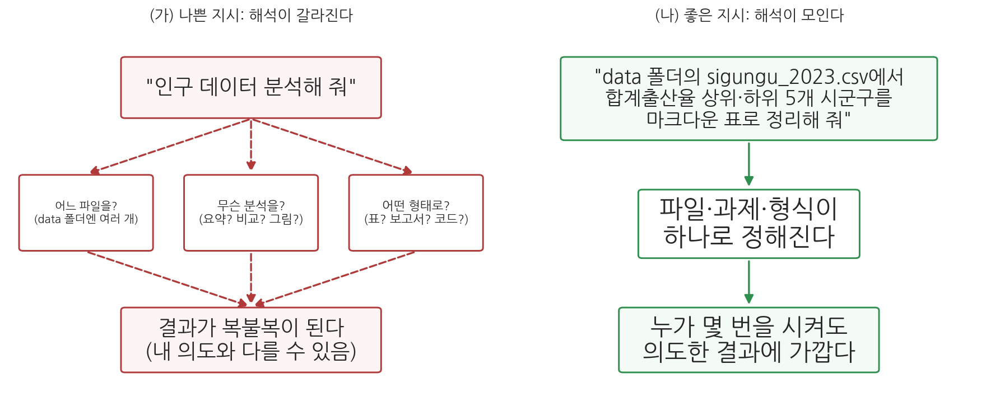
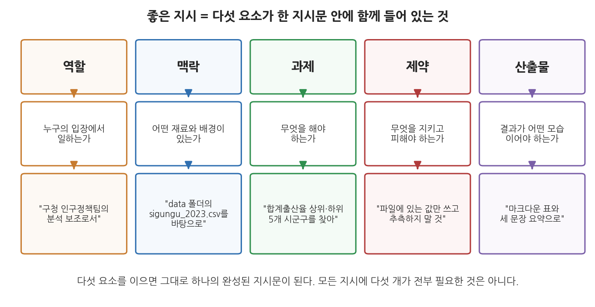
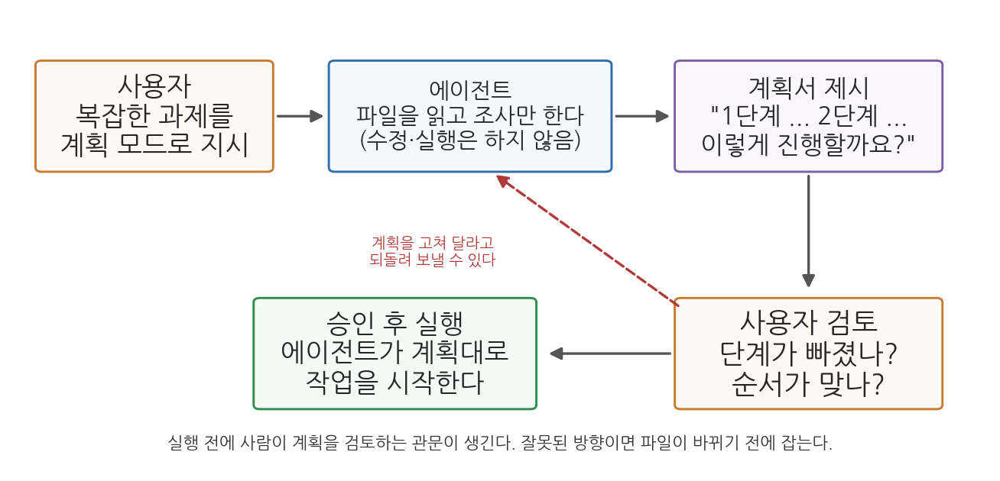

3주차 1회차. 에이전트에게 일 시키는 법: 지시 설계
프로그램은 사람이 읽을 수 있도록 쓰여야 하며, 기계가 실행하는 것은 부차적이다. (해럴드 에이벌슨·제럴드 서스먼, 『컴퓨터 프로그램의 구조와 해석』)
이 장에서 배우는 것
첫 출근한 인턴에게 과장이 "그거 좀 정리해 줘"라고만 말하고 자리를 뜬다면 어떻게 될까. 인턴은 "그거"가 무엇인지, "정리"가 파일 정돈인지 요약 보고인지, 언제까지 어떤 형태로 내야 하는지를 전부 혼자 짐작해야 한다. 운이 좋으면 과장이 원한 것이 나오고, 운이 나쁘면 하루를 통째로 버린다. 일이 잘못된 것은 인턴이 무능해서가 아니라 지시가 비어 있었기 때문이다.
에이전트에게 일을 시킬 때도 똑같은 일이 벌어진다. 1주차에서 분석가의 세 가지 역할이 지시·검증·해석이라고 배웠고, 2주차에서는 에이전트가 왜 그럴듯한 거짓을 말하고(환각) 같은 지시에도 매번 조금씩 다른 답을 내는지(비결정성) 원리를 보았다. 이번 주는 그 세 역할 중 첫 번째, 지시를 본격적으로 훈련한다. 지시는 타고난 말재주의 문제가 아니라 배울 수 있는 기술이다. 그리고 이 기술은 AI 플루언시의 네 기둥 중 위임(무엇을 맡길지 정하기)과 기술(원하는 것을 명확히 설명하기)을 실제로 실행하는 방법이기도 하다.
이 장에서 구체적으로 다음을 배운다.
- 챗봇 시대의 "프롬프트"와 에이전트 시대의 "지시 설계"가 어떻게 다른지
- 좋은 지시를 이루는 다섯 요소: 역할, 맥락, 과제, 제약, 산출물
- 큰 일을 단계로 쪼개는 법과, 실행 전에 계획을 검토하는 계획 모드
- 에이전트에게 맥락(파일, 예시)을 건네는 방법: 경로 명시와 @멘션
- 매번 반복하는 규칙을 영구 고정하는 파일, CLAUDE.md
- 검증 절차를 지시문 안에 미리 심는 법
이 장은 하나의 질문을 따라 전개된다. "같은 에이전트를 쓰는데 왜 어떤 사람은 원하는 결과를 얻고 어떤 사람은 얻지 못하는가?"
1.1 프롬프트에서 지시 설계로, 관점의 전환을 본다 → 1.2 좋은 지시의 다섯 요소를 익힌다 (역할·맥락·과제·제약·산출물) → 1.3 큰 일을 쪼개는 법과 계획 모드를 배운다 → 1.4 파일과 예시로 맥락을 건네는 법을 익힌다 → 1.5 반복 규칙을 CLAUDE.md로 고정한다 → 1.6 검증을 지시 안에 내장한다.
1.1 프롬프트 엔지니어링에서 지시 설계로
"마법의 주문"을 찾던 시대
챗봇에 입력하는 글을 프롬프트(prompt)라 부른다. 챗봇이 널리 퍼지면서 "프롬프트를 잘 쓰는 요령"도 함께 유행했다. "단계별로 생각해 보세요"라고 덧붙이면 답이 좋아진다더라, 전문가인 척 시키면 더 잘한다더라 하는 식이다. 이런 요령을 모아 프롬프트 엔지니어링(prompt engineering)이라 불렀다. 마치 정답 주문이 어딘가에 있고, 그것을 찾아내면 되는 것처럼 들리던 시절이다.
이런 요령이 무의미한 것은 아니다. 그러나 챗봇 시대의 프롬프트는 기본적으로 한 번의 질문이었다. 질문 하나를 던지고 답 하나를 받는 구조에서는 "질문 문장을 어떻게 다듬을까"가 고민의 전부였다.
에이전트에게 건네는 것은 질문이 아니라 업무다
에이전트는 다르다. 2주차에서 본 것처럼 에이전트는 지시 하나를 받으면 계획을 세우고, 도구를 쓰고, 결과를 확인하는 루프를 여러 바퀴 돈다. 파일을 열고, 명령을 실행하고, 새 파일을 만든다. 즉 여러분이 건네는 것은 질문 한 개가 아니라 업무 한 건이다. 업무를 맡길 때 필요한 것은 문장 다듬기 요령이 아니라, 신입 직원에게 일을 시킬 때와 같은 업무 설계다. 무엇을(과제), 무엇으로(맥락), 어떤 조건에서(제약), 어떤 형태로(산출물) 해야 하는지를 정하는 일이다. 이 교재는 이것을 지시 설계라 부른다.
프롬프트(prompt)는 AI에 입력하는 글 전체를 가리키는 일반 용어다.
지시 설계(instruction design)는 에이전트에게 맡길 업무를 설계하는 일이다. 문장을 예쁘게 쓰는 것이 아니라, 에이전트가 스스로 짐작해야 할 빈칸을 줄이도록 업무의 내용·재료·조건·완성 기준을 정해 주는 것이 핵심이다.
나쁜 지시는 빈칸을 에이전트에게 떠넘긴다
왜 빈칸이 문제인가. 그림 3-1을 보자.

왼쪽(가)의 "인구 데이터 분석해 줘"라는 지시에는 빈칸이 세 개나 있다. 어느 파일인지, 무슨 분석인지, 어떤 형태로 내놓을지가 모두 비어 있다. 에이전트는 이 빈칸을 스스로 메워야 하는데, 2주차에서 배웠듯 LLM의 출력에는 비결정성이 있어서 빈칸을 메우는 방식이 매번 달라질 수 있다. 오늘은 표가 나오고 내일은 긴 보고서가 나온다. 결과가 복불복이 되는 것이다. 오른쪽(나)처럼 파일·과제·형식을 지시문 안에서 정해 주면 에이전트의 해석이 한 곳으로 모이고, 누가 몇 번을 시켜도 의도한 결과에 가까워진다.
여기서 2주차 실습(2.3절, 비결정성 체험)을 떠올려 보자. "흥미로운 사실 세 가지를 골라 줘" 같은 열린 지시는 답의 편차가 컸고, "총인구가 가장 많은 시군구 1곳"처럼 닫힌 지시는 표현만 다를 뿐 내용이 같았다. 그 실험이 보여 준 것이 바로 이 원리다. 지시가 구체적일수록 비결정성이 결과에 미치는 영향이 줄어든다.
한 가지 균형을 잡아 두자. 모든 지시가 빈틈없이 촘촘해야 하는 것은 아니다. "이 데이터에서 눈에 띄는 점을 자유롭게 말해 봐"처럼 일부러 열어 두는 지시가 유용한 순간도 있다(9주차의 탐색적 분석이 그렇다). 문제는 여는 것 자체가 아니라, 닫아야 할 것(파일, 기준, 형식)을 무심코 열어 두는 것이다.
1.2 좋은 지시의 다섯 요소: 역할, 맥락, 과제, 제약, 산출물
그러면 지시문에 무엇을 담아야 하는가. 다섯 개의 질문에 답하면 된다. 그림 3-2가 그 다섯 요소다.

표 3-1. 다섯 요소와 각 요소가 답하는 질문
| 요소 | 답하는 질문 | 예시 문구 |
|---|---|---|
| 역할 | 누구의 입장에서 일하는가 | "구청 인구정책팀의 분석 보조로서" |
| 맥락 | 어떤 재료와 배경이 있는가 | "data 폴더의 sigungu_2023.csv를 바탕으로" |
| 과제 | 무엇을 해야 하는가 | "합계출산율 상위·하위 5개 시군구를 찾아" |
| 제약 | 무엇을 지키고 피해야 하는가 | "파일에 있는 값만 쓰고 추측하지 말 것" |
| 산출물 | 결과가 어떤 모습이어야 하는가 | "마크다운 표와 세 문장 요약으로" |
하나씩 보자.
역할: 눈높이와 관점을 정한다
역할은 에이전트에게 "누구로서" 일할지를 알려 준다. 같은 데이터를 요약해도 "통계학 교수로서"와 "중학생 눈높이의 설명자로서"는 결과의 어휘와 깊이가 달라진다. 공공데이터 분석에서는 "구청 인구정책팀의 분석 보조", "시의회 보고서를 준비하는 연구원"처럼 업무 상황을 담은 역할이 유용하다. 역할이 정해지면 에이전트는 어떤 어휘로, 얼마나 신중하게, 무엇을 중요하게 다룰지의 기본값을 잡는다.
맥락: 재료와 배경을 건넨다
맥락은 두 가지다. 첫째는 재료, 곧 어떤 파일·데이터를 쓸 것인지다. 2주차에서 배운 맥락창을 떠올리자. 에이전트는 내 컴퓨터의 폴더를 전부 자동으로 아는 것이 아니라, 열어 본 것만 안다. "인구 데이터"라고 말하면 에이전트가 어느 파일을 열지 알 수 없지만, "data 폴더의 sigungu_2023.csv"라고 말하면 정확히 그 파일을 연다. 둘째는 배경, 곧 이 일이 왜 필요한지다. "다음 주 팀 회의에서 저출산 대응 예산을 논의하는 데 참고할 자료다"라는 한 문장이 들어가면, 에이전트는 어떤 지표를 앞세울지, 어느 수준으로 요약할지를 훨씬 잘 잡는다. 맥락을 건네는 구체적 방법(@멘션 등)은 1.4절에서 따로 다룬다.
과제: 동사로, 확인 가능하게
과제는 지시의 몸통이다. 요령은 두 가지다. 첫째, 뭉뚱그린 명사("분석", "정리")가 아니라 구체적 동사로 쓴다. "찾아라", "세어라", "비교해라", "표로 만들어라". 둘째, 했는지 안 했는지 확인할 수 있게 쓴다. "출산율을 분석해 줘"는 완료 여부를 판정할 수 없지만, "합계출산율 상위 5개와 하위 5개 시군구를 찾아 값과 함께 표로 만들어 줘"는 표가 나왔는지, 10곳이 다 있는지로 판정할 수 있다. 과제를 확인 가능하게 쓰는 습관은 1.6절의 검증 내장으로 자연스럽게 이어진다.
제약: 하지 말 것과 지킬 것
제약은 에이전트가 벗어나기 쉬운 길목에 미리 세우는 표지판이다. 공공데이터 분석에서 자주 쓰는 제약은 이런 것들이다.
- 출처 제약. "파일에 있는 값만 사용하고, 파일에 없는 숫자는 지어내지 말 것." 2주차에서 본 환각을 지시 단계에서 누르는 가장 직접적인 방법이다.
- 범위 제약. "수도권(서울·경기·인천)만 대상으로 할 것." 범위를 정하지 않으면 에이전트가 임의로 정한다.
- 행동 제약. "data 폴더의 원본 파일은 수정하지 말 것." 되돌리기 어려운 행동을 막는다.
- 방법 제약. "웹 검색은 하지 말 것" 또는 반대로 "반드시 출처 확인 후 답할 것".
산출물: 완성된 모습을 그려 준다
마지막으로, 결과가 어떤 모습이어야 하는지를 말한다. 형식(마크다운 표, 줄글 요약, 별도 파일), 분량(세 문장, 반 쪽), 저장 위치(산출물 폴더에 파일로), 언어(한국어)가 여기에 든다. 산출물을 지정하지 않으면 2주차 실습에서 본 것처럼 한 번은 표로, 한 번은 줄글로 나온다. 특히 "파일로 저장해 줘"와 "대화창에 보여 줘"는 이후 작업의 흐름을 완전히 바꾸므로 꼭 구분해 말한다.
다섯 요소를 조립하면 지시문이 된다
표 3-1의 예시 문구를 그대로 이으면 이렇게 된다.
"구청 인구정책팀의 분석 보조로서, data 폴더의 sigungu_2023.csv를 바탕으로 합계출산율 상위 5개와 하위 5개 시군구를 찾아 줘. 파일에 있는 값만 쓰고 추측하지 말고, 결과는 마크다운 표와 세 문장 요약으로 정리해 줘."
특별한 양식 없이 자연스러운 한국어 두 문장이다. 다섯 요소는 문서 서식이 아니라 점검 목록이다. 지시문을 쓰고 나서 "역할·맥락·과제·제약·산출물 중 빠진 것이 있나, 빠졌다면 일부러 뺀 것인가"를 스스로 물어보는 용도로 쓴다.
"data 폴더에 어떤 파일이 있는지 알려 줘" 같은 짧은 과제에 역할과 제약까지 붙이면 오히려 어색하다. 간단한 일은 과제와 맥락만으로 충분하다. 다섯 요소를 전부 채우는 것이 목표가 아니라, 빈칸을 의식하고 남기는 것이 목표다. 지시가 길수록 좋은 것도 아니다. 서로 모순되는 요구를 잔뜩 담은 긴 지시는 짧고 명확한 지시보다 나쁘다.
2주차에서 LLM은 "다음에 올 말"을 확률로 고른다고 배웠다. 앞에 어떤 글이 있느냐에 따라 다음 말의 확률 분포가 달라진다. "구청 인구정책팀의 분석 보조로서"라는 문구가 앞에 있으면, 그 뒤에 이어질 말로는 행정 실무의 어휘와 신중한 표현이 확률적으로 더 자주 뽑힌다. 역할 지정은 마법이 아니라, 확률 분포를 원하는 방향으로 기울이는 장치다. 같은 원리로, 지시문에 담긴 모든 단어가 조금씩 결과를 기울인다. 지시문을 "에이전트가 이어 쓸 글의 첫머리"라고 생각하면 왜 표현 하나하나가 중요한지 이해된다.
1.3 큰 일은 쪼갠다: 단계 나누기와 계획 모드
한 번에 시키면 안 되는 일이 있다
다섯 요소를 갖췄다 해도, 일 자체가 크면 지시 한 번으로 끝내기 어렵다. 예를 들어 이런 과제를 생각해 보자. "sigungu_2023.csv를 바탕으로 우리 지역 인구 현황 보고서를 만들어 줘." 이 안에는 사실 여러 단계가 숨어 있다. 데이터 구조 파악, 지표 선택, 계산, 비교 대상 선정, 해석, 문서 작성. 이것을 한 번에 시키면 두 가지 문제가 생긴다.
첫째, 검증할 수 없다. 2주차 1.6절에서 "검증 가능한 단위로 일을 맡긴다"는 신뢰의 원칙을 배웠다. 30분짜리 작업이 끝난 뒤에 받아 든 완성 보고서는 어디부터 확인해야 할지 막막하다. 중간 단계(예: 지표 계산)에서 생긴 오류가 최종 문장 속에 녹아 들어가면 찾아내기가 훨씬 어렵다.
둘째, 방향이 틀렸을 때 손실이 크다. 에이전트가 첫 단추(예: 어떤 지표를 쓸지)를 내 의도와 다르게 끼우면, 그 위에 쌓은 모든 작업이 헛일이 된다. 잘못된 방향으로 오래 달리게 두는 것이 가장 비싼 실패다.
해법은 사람의 업무 관리와 같다. 큰 일을 단계로 쪼개고, 단계마다 확인 지점을 둔다.
1단계: "sigungu_2023.csv의 구조(행 수, 열 목록, 값이 비어 있는 곳)를 알려 줘." → 내가 확인 2단계: "강원 지역 시군구만 추려서 총인구·고령인구비율·합계출산율을 표로 정리해 줘." → 내가 확인 3단계: "이 표에서 눈에 띄는 점 세 가지를 골라 근거 숫자와 함께 설명해 줘." → 내가 확인 4단계: "확인이 끝난 내용만으로 반 쪽짜리 요약문을 만들어 줘."
단계 사이사이의 "내가 확인"이 핵심이다. 각 단계의 산출물이 작고 명확하기 때문에 검증이 쉽고, 방향이 틀렸으면 다음 단계로 가기 전에 바로잡을 수 있다.
계획 모드: 실행 전에 계획을 검토하는 관문
단계를 어떻게 쪼갤지 자체가 막막할 때도 있다. 그럴 때 쓰라고 Claude Code에는 계획 모드(plan mode)가 있다.
계획 모드(plan mode)는 Claude Code의 작동 모드 중 하나로, 에이전트가 파일을 읽고 조사하는 것까지만 하고 파일을 만들거나 고치지는 않는 상태다. 에이전트는 조사를 마친 뒤 "이런 단계로 진행하겠다"는 계획을 제시하고 사용자의 승인을 기다린다. 사용자는 계획을 승인할 수도, 고쳐 달라고 되돌려 보낼 수도 있다. 승인하면 그때부터 에이전트가 계획대로 실행을 시작한다.

그림 3-3이 이 흐름이다. 평소(기본 모드)에는 에이전트가 지시를 받으면 곧바로 작업에 들어가고, 파일 수정 같은 행동마다 승인을 구한다(2주차 2.4절의 권한 모드). 계획 모드에서는 순서가 다르다. 에이전트가 먼저 읽기와 조사만으로 상황을 파악해 계획서를 내놓고, 사람이 그 계획을 검토하는 관문이 실행 앞에 하나 생긴다. 단계가 빠졌는지, 순서가 맞는지, 내 의도와 방향이 같은지를 파일이 하나도 바뀌기 전에 확인할 수 있다.
VSCode의 Claude Code 확장에서는 지시 입력창 아래에 현재 모드가 표시되며, 이것을 눌러 계획 모드로 바꿀 수 있다. 계획이 완성되면 문서 형태로 열려서 차분히 읽어 볼 수 있고, 의견을 달아 계획을 다듬은 뒤 승인할 수도 있다. 조작 방법의 세부는 버전에 따라 조금씩 달라지므로, 실습(3주차 2회차)에서 화면을 직접 보며 익힌다.
언제 계획 모드를 쓰는가. 대략 이런 기준이 유용하다.
- 작업이 세 단계 이상으로 쪼개질 것 같을 때
- 파일을 여러 개 만들거나 고치는 작업일 때
- 내가 원하는 방향을 나 스스로도 아직 확정하지 못했을 때 (계획서를 보며 생각을 정리한다)
- 반대로 "파일 하나 읽고 값 하나 알려 줘" 수준의 일에는 계획 모드가 과하다
계획 모드의 가치는 1주차에서 배운 자율성 조절과 잇닿아 있다. 판단이 필요한 갈림길(무엇을 어떤 순서로 할 것인가)에서는 사람이 고삐를 잡고, 확정된 계획의 실행은 에이전트에게 맡기는 것이다.
1.4 맥락 제공: 파일 첨부, @멘션, 예시 제시
1.2절에서 맥락이 다섯 요소의 하나라고 했다. 이 절에서는 맥락을 건네는 구체적인 손기술을 본다.
방법 1. 경로를 정확히 쓴다
가장 기본은 지시문 안에 파일 경로를 정확히 적는 것이다. "인구 파일"이 아니라 "data 폴더의 sigungu_2023.csv"라고 쓴다. 폴더 이름과 파일 이름을 정확히 쓰면 에이전트가 다른 파일을 여는 사고가 줄어든다. 파일 이름이 기억나지 않으면 먼저 "data 폴더에 어떤 파일이 있는지 알려 줘"라고 물어서 목록부터 확인한다.
방법 2. @멘션으로 파일을 지목한다
VSCode의 Claude Code 확장에는 더 편한 방법이 있다. 입력창에 @를 입력하고 파일이나 폴더 이름을 이어 쓰면, 해당 파일을 에이전트가 읽을 맥락으로 직접 지목할 수 있다. 이름의 일부만 입력해도 비슷한 이름의 파일을 찾아 주는 방식이라(예: "sigungu"까지만 쳐도 후보가 뜬다), 긴 경로를 외울 필요가 없다. 폴더를 지목할 때는 이름 뒤에 /를 붙인다. 또한 편집기에서 텍스트를 드래그해 선택해 두면 에이전트가 그 선택 부분을 볼 수 있어서, "지금 선택한 이 부분을 설명해 줘" 같은 지시가 가능하다.
@멘션과 경로 명시는 하는 일이 같다. 에이전트의 맥락창 안에 "이 파일을 봐라"라는 표지를 세우는 것이다. 어느 쪽을 쓰든, 중요한 것은 에이전트가 알아서 찾아 주겠지 하고 파일 지정을 생략하지 않는 것이다.
방법 3. 원하는 결과의 예시를 보여 준다
말로 설명하기 어려운 형식은 예시 한 개가 문장 열 개보다 낫다. 예를 들어 시군구 요약표의 모양을 원하는 대로 받고 싶다면 이렇게 지시한다.
"시도별 요약표를 만들어 줘. 형식은 이 예시처럼: | 시도 | 시군구 수 | 총인구 | 합계출산율 평균 | |------|------|------|------| | 강원 | 18 | 1,536,498 | 0.982 | (강원 행은 형식을 보여 주는 예시다. 모든 시도의 값을 파일에서 직접 계산해 채울 것)"
예시를 주면 열 구성, 단위 표기, 자릿수 같은 세부가 한 번에 전달된다. 이렇게 예시로 의도를 전달하는 방식은 AI 활용 전반에서 널리 쓰이는 기법이다. 단, 예시 행을 에이전트가 "이미 확정된 값"으로 오해해 계산 없이 베낄 수 있으므로, 위처럼 예시의 지위(형식 안내용이며 값은 다시 계산할 것)를 못 박아 두는 것이 안전하다.
2주차에서 맥락창은 유한한 작업 기억이라고 배웠다. 폴더의 파일을 몽땅 읽게 하면 정작 중요한 정보가 잡동사니에 묻히고, 맥락창이 빨리 차서 대화가 길어질수록 앞의 내용을 잃는다. 지금 과제에 필요한 파일만 골라 지목하는 것이 좋은 맥락 제공이다. 신입에게 서고 전체를 통째로 안기는 상사보다, 필요한 서류철 두 개를 뽑아 주는 상사가 유능한 것과 같다.
1.5 CLAUDE.md: 반복 규칙을 영구 고정하기
매번 같은 말을 반복하고 있다면
몇 번 실습을 해 보면 곧 알게 된다. 지시할 때마다 반복하는 말이 생긴다는 것을. "답은 한국어로", "data 폴더의 원본은 건드리지 말고", "숫자는 파일에서 확인한 것만". 문제는 에이전트가 이것을 기억해 주지 않는다는 데 있다. 2주차에서 배웠듯 맥락창은 대화(세션)가 새로 시작되면 비워진다. 어제 열 번을 말했어도 오늘 새 대화를 열면 처음부터 다시 말해야 한다.
이 반복을 없애는 장치가 CLAUDE.md다.
CLAUDE.md는 프로젝트 폴더에 두는 마크다운 문서로, Claude Code가 대화를 시작할 때마다 자동으로 읽어 들이는 지속 지침 파일이다. 여기에 적힌 규칙(폴더 구조, 데이터 설명, 금지 사항, 답변 언어 등)은 매 세션의 맥락창에 처음부터 들어간 채로 대화가 시작된다. 한 번 적어 두면 세션이 바뀌어도 유지되므로, "반복해서 말하게 되는 규칙의 영구 저장소"라고 생각하면 된다.
파일 이름 그대로 CLAUDE.md라는 파일을 프로젝트 폴더(우리의 경우 '공공데이터분석' 폴더)의 맨 위에 만들어 두면 된다. 내용은 특별한 문법 없이, 제목과 목록으로 정리한 보통의 마크다운 글이면 된다. Claude Code에는 프로젝트를 살펴보고 CLAUDE.md 초안을 대신 만들어 주는 기능(/init 명령)도 있는데, 초안을 받은 뒤 내 규칙을 덧붙이는 식으로 쓰면 편하다.
무엇을 적는가
CLAUDE.md에 어울리는 내용은 "다음 세션에서도 똑같이 적용될 사실과 규칙"이다.
- 프로젝트 소개. 이 폴더가 무엇을 위한 것인지, 사용자는 누구인지 (예: "프로그래밍을 배우지 않은 학부생이다. 쉬운 한국어로 설명하라.")
- 폴더 구조. 어디에 무엇이 있고, 새 파일은 어디에 만들지
- 데이터 설명. 주요 데이터 파일의 내용, 출처, 알려진 특이점 (예: "군위군은 합계출산율 값이 비어 있다.")
- 작업 규칙. 원본 수정 금지, 숫자는 파일에서 확인한 것만, 답변은 한국어로
반대로 어울리지 않는 내용도 있다. 한 번만 쓸 지시("출산율 상위 5곳을 찾아 줘")는 그때그때 대화로 하면 되고, 특정 실습에만 해당하는 세부 절차도 CLAUDE.md에 넣으면 다른 작업 때 방해가 된다.
CLAUDE.md는 프로젝트 폴더 말고 다른 위치에도 둘 수 있다. 사용자 홈 폴더 쪽에 두면 모든 프로젝트에 공통으로 적용되는 개인 규칙이 되는데, 위치별 차이는 지금 외울 필요 없다. 이 과목에서는 "프로젝트 폴더의 CLAUDE.md 하나"로 충분하며, 실습에서 직접 만들어 본다.
CLAUDE.md의 내용은 에이전트가 참고하는 맥락이지, 어기는 것이 불가능한 강제 장치가 아니다. 규칙이 모호하거나 서로 모순되면 에이전트가 따르지 못할 수 있다. 그래서 두 가지 요령이 중요하다. 첫째, 짧고 구체적으로 쓴다. "데이터를 잘 다룰 것" 같은 두루뭉술한 문장보다 "data 폴더의 파일은 수정·삭제하지 않는다"가 훨씬 잘 지켜진다. 둘째, CLAUDE.md에 적었다고 해서 검증을 생략하지 않는다. 규칙은 실수의 확률을 낮출 뿐 없애지 못한다.
잘 쓴 CLAUDE.md는 다섯 요소 중 역할·맥락·제약을 프로젝트 수준에서 미리 채워 두는 것과 같다. "나는 이런 사용자다"(역할의 상대), "데이터는 이런 것이 있다"(맥락), "이것은 하지 마라"(제약)가 이미 깔려 있으니, 매번의 지시문에는 과제와 산출물만 담으면 된다. 지시문이 짧아지는데 결과는 더 일관되어진다. 다음 학기, 다음 프로젝트에서도 CLAUDE.md부터 만드는 습관을 들이면 에이전트 활용의 수준이 달라진다. 12주차에서 배울 Skill은 여기서 한 걸음 더 나아가, 자주 쓰는 작업 절차 자체를 파일로 고정하는 장치다.
1.6 검증을 내장한 지시: 성공 기준을 함께 준다
검증은 지시가 끝난 뒤에 시작되지 않는다
1주차 이후 매 실습에서 "에이전트가 한 일은 반드시 검증한다"를 반복해 왔다. 그런데 검증을 잘하는 사람은 결과를 받아 든 뒤가 아니라 지시를 쓰는 순간부터 검증을 시작한다. 지시문 안에 "무엇이 되어야 성공인지"와 "스스로 확인할 것"을 심어 두는 것이다. 네 가지 기법이 있다.
기법 1. 성공 기준을 숫자로 명시한다. "요약해 줘"가 아니라 "229개 시군구가 빠짐없이 집계에 포함되어야 한다"라고 쓴다. 성공 기준이 있으면 에이전트도 그것을 향해 일하고, 나도 그 기준으로 결과를 판정하면 된다. 검증 항목을 지시 시점에 미리 정해 두는 셈이다.
기법 2. 근거를 함께 보고하게 한다. "값만 말하지 말고, 어느 파일의 어느 열에서 어떻게 구했는지 함께 밝혀 줘." 근거가 붙어 있으면 검증할 때 같은 경로를 따라가며 대조할 수 있다. 2주차 환각 실험에서 확인 경로를 열어 준 질문(실험 B)이 믿을 만한 답을 만들었던 것과 같은 원리다.
기법 3. 이상 상황을 보고하게 한다. 데이터에는 함정이 있다. 실제로 sigungu_2023.csv에는 값이 비어 있는 칸이 있다. 군위군의 합계출산율과 출생아수가 비어 있어서, "합계출산율" 열에 값이 있는 시군구는 229곳 중 228곳뿐이다. "값이 비어 있거나 이상해 보이는 곳이 있으면 계산 전에 보고해 줘"라는 한 줄이 있으면, 에이전트가 이런 함정을 조용히 지나치는 대신 수면 위로 올린다. 없으면 어떻게 되는가. 예컨대 "합계출산율 평균을 구해 줘"라고만 하면 에이전트는 빈칸을 뺀 228곳 평균(0.823)을 아무 설명 없이 "전국 평균"처럼 보고할 수 있다. 게다가 이 값은 시군구를 하나씩 똑같이 세어 낸 단순평균이라 인구 규모를 반영한 공식 전국 통계와도 다르다. 이런 미묘한 어긋남은 결과만 봐서는 알 수 없고, 계산 과정을 보고하게 해야 드러난다.
기법 4. 모르면 모른다고 답하게 한다. "파일에 없는 값을 물으면 없다고 답해 줘. 추측으로 채우지 마." 2주차에서 환각은 모른다고 말하는 대신 그럴듯한 것을 만들어 내는 성질이라고 배웠다. 이 한 줄은 "모른다"라는 답의 자리를 지시문 안에 미리 만들어 주는 것이다.
표 3-2. 검증 없는 지시와 검증을 내장한 지시
| 검증 없는 지시 | 검증을 내장한 지시 | |
|---|---|---|
| 지시문 | "sigungu_2023.csv에서 합계출산율 평균을 구해 줘" | "sigungu_2023.csv에서 합계출산율 평균을 구해 줘. 값이 비어 있는 시군구가 있으면 몇 곳인지 먼저 보고하고, 몇 곳의 값으로 평균을 냈는지 밝혀 줘" |
| 예상 답변 | "평균은 0.823입니다" | "군위군 1곳이 비어 있어 228곳으로 계산했습니다. 평균은 0.823입니다" |
| 내가 알게 되는 것 | 숫자 하나 | 숫자 + 계산 범위 + 데이터의 함정 |
| 검증 난이도 | 무엇을 확인할지부터 막막함 | 보고된 근거를 따라 대조하면 됨 |
두 지시의 차이는 몇 글자에 불과하지만, 받아 드는 결과의 검증 가능성은 완전히 다르다. 왼쪽 답변은 맞는지 틀리는지 판단할 실마리가 없고, 오른쪽 답변은 "군위군이 정말 비어 있나"부터 파일을 열어 확인해 들어갈 수 있다.
여기서 이 장의 처음으로 돌아가 보자. 좋은 지시란 결국 에이전트를 위한 것이 아니라 나를 위한 것이다. 다섯 요소는 에이전트의 해석이 갈라질 빈칸을 줄이고, 단계 나누기와 계획 모드는 검증 가능한 크기로 일을 자르고, CLAUDE.md는 그 규칙을 고정하고, 검증 내장은 결과를 따져 볼 손잡이를 미리 달아 둔다. 네 가지 모두 한 방향을 가리킨다. 지시를 잘 쓰는 사람이 검증도 잘하고, 검증을 염두에 둔 사람이 지시도 잘 쓴다.
요약
챗봇 시대의 프롬프트가 한 번의 질문 문구를 다듬는 일이었다면, 에이전트 시대의 지시는 업무 한 건을 설계하는 일이다(지시 설계). 나쁜 지시는 파일·기준·형식 같은 빈칸을 에이전트의 짐작에 떠넘기고, 비결정성 때문에 그 짐작은 매번 달라져 결과가 복불복이 된다. 좋은 지시는 다섯 요소, 곧 역할(누구로서), 맥락(무슨 재료로), 과제(무엇을), 제약(무엇은 하지 말고), 산출물(어떤 모습으로)을 의식적으로 채우거나 의식적으로 비운다. 여러 단계짜리 큰 일은 검증 가능한 단위로 쪼개어 단계마다 확인 지점을 두며, 계획 모드를 쓰면 에이전트가 실행 전에 계획서를 제시하므로 파일이 바뀌기 전에 방향을 검토할 수 있다. 맥락은 경로 명시나 @멘션으로 필요한 파일만 지목해 건네고, 형식은 예시로 보여 주는 것이 효과적이다. 매번 반복하게 되는 규칙은 프로젝트 폴더의 CLAUDE.md에 적어 두면 세션이 바뀌어도 유지된다. 마지막으로, 성공 기준·근거 보고·이상 상황 보고·모름의 허용을 지시문 안에 내장하면 검증이 쉬운 결과를 받게 된다. 다음 회차 실습에서 같은 과제를 나쁜 지시와 좋은 지시로 각각 시켜 이 차이를 직접 확인한다.
연습문제
3-1. 지시문 고쳐 쓰기. 다음 지시문에서 비어 있는 요소(역할·맥락·과제·제약·산출물)를 찾고, 다섯 요소를 갖춘 지시문으로 다시 써 보라. 상황은 자유롭게 상상하되 실제로 입력 가능한 완결된 문장으로 쓸 것. (a) "우리 동네 자료 좀 정리해 줘" (b) "출산율이 왜 낮은지 분석해 줘"
3-2. 단계 나누기와 계획 모드. "sigungu_2023.csv로 수도권과 비수도권의 인구 지표를 비교하는 두 쪽짜리 보고서 만들기"라는 과제가 있다. (1) 이 과제를 확인 지점이 있는 3-5개의 단계로 쪼개 보라. (2) 이 과제에 계획 모드를 쓰는 것이 적절한지, 1.3절의 기준을 들어 판단해 보라.
3-3. 검증 내장하기. "sigungu_2023.csv에서 고령인구비율이 가장 높은 시군구를 알려 줘"라는 지시에 1.6절의 네 기법 중 두 가지 이상을 적용해 지시문을 다시 써 보라. 그리고 에이전트의 답을 받았다고 가정할 때, 그 답을 어떻게 손으로 검증할지 한 문장으로 써 보라.